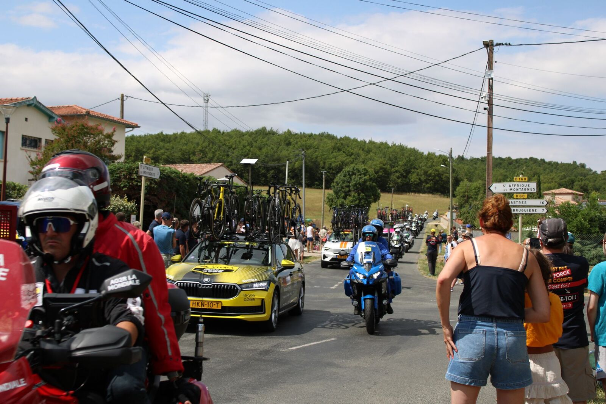
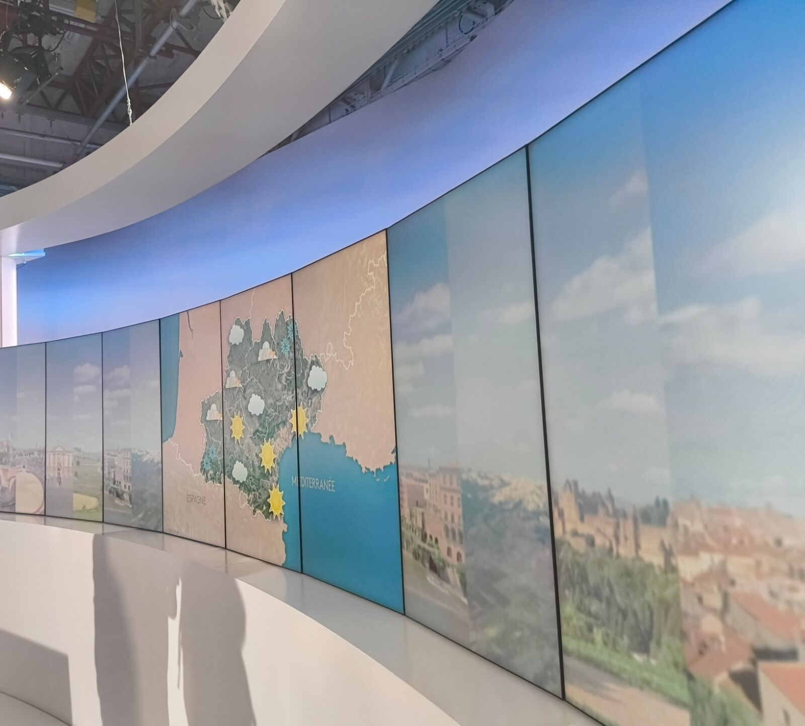
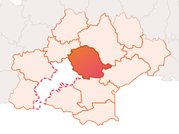
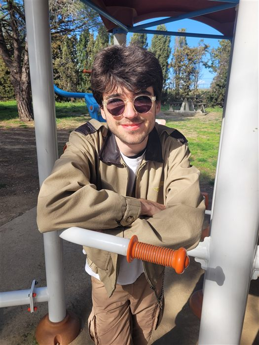

Un média associatif, fait par des bénévoles de tous âges
Pas besoin d'être journaliste pour nous rejoindre. Pas besoin de diplôme. Pas besoin de carte de presse.
Qui sommes-nous ?
Avant Ipsum Média, c'était d'abord des lycéens passionnés de journalisme qui réalisaient un journal trimestriel, toutes classes confondues. En juin 2024, quatre d'entre eux donnent naissance à Ipsum Média avec la création d'une newsletter hebdomadaire sur l'actualité du Tarn.
Nous sommes Ipsum Média, un collectif de jeunes qui avons lancé fin juin 2024 un média d'information local ayant pour but de réconcilier les habitants avec une vision négative du journalisme. En février 2026, nous avons franchi un cap en devenant un média associatif, ouvert aux étudiants et jeunes qui veulent se lancer dans le journalisme.
Nous avons pour but de promouvoir ce qui fait vivre nos territoires à travers des interviews, des reportages, des articles qui les mettent en valeur. Avec un âge médian de 20 ans, notre équipe retransmet des infos variées avec des sources comme des mairies, des institutions gouvernementales ou encore des entreprises.
Ipsum Média compte aujourd'hui trois rédactions : le Tarn, la Haute-Garonne et une rédaction nationale, qui traite les sujets d'actualité nationale et a sa propre newsletter. Elle ne couvre pas encore toute la France : cela viendra plus tard.
Vous souhaitez communiquer vos infos ou collaborer avec nous ? Écrivez-nous.

On couvre beaucoup de sujets, parce que la vie locale en compte beaucoup
Actualité locale, culture, sport, économie, société, environnement : nos journalistes bénévoles vont là où ça se passe, d'un conseil municipal à une course cycliste, et racontent ce qui fait vivre le territoire.

Une aventure, pas seulement du journalisme
Ipsum Média permet à celles et ceux qui nous rejoignent de découvrir le métier de l'intérieur : des ateliers, des immersions dans des rédactions, des interventions au sein de l'association. On y vient pour écrire, on y apprend aussi à photographier, filmer, animer, organiser.
Ce qui nous anime
Indépendance
Ipsum Média est une association loi 1901, sans actionnaire ni intérêt commercial ou politique à défendre. Nos choix éditoriaux n'appartiennent qu'à notre rédaction.
Apprendre en faisant, sans diplôme requis
Aucun diplôme n'est demandé pour nous rejoindre. Chaque bénévole est formé et accompagné en interne, et progresse au contact du terrain plutôt que sur des exercices théoriques.
Ouverture à tous
Lycéens, étudiants, jeunes actifs : notre équipe réunit des profils de tous âges et de tous horizons, unis par la même envie de raconter ce qui se passe près de chez eux.
Accessibilité pour tous
Nous nous adaptons à chacun, y compris aux personnes en situation de handicap mental, pour que l'engagement associatif et le journalisme restent accessibles à tous.
Ancrage local
On va à la rencontre de celles et ceux qui font vivre nos territoires, du Tarn à la Haute-Garonne. Nos sources sont sur le terrain, pas seulement derrière un communiqué.
Économie sociale et solidaire
Membres de l'ESS, nous partageons ses principes : utilité sociale avant profit, gouvernance démocratique et engagement au service de nos territoires plutôt que d'intérêts privés.
Ipsum Média & l'IA
Nous croyons que l'IA peut être un outil utile, mais elle ne remplacera jamais le travail humain, surtout dans un média local où la confiance et la vérification sont essentielles. Elle nous assiste pour certaines tâches (corrections, traductions, structuration...), jamais pour générer un article de zéro. Son usage est toujours signalé, et tout contenu généré est relu et vérifié. Lire notre charte IA complète →
Comment naît un article
- Des sources identifiées. Mairies, institutions, entreprises, associations, et des rencontres sur le terrain.
- Une relecture avant publication. Un article est relu et validé avant d'être mis en ligne.
- Une équipe de rédaction. Rédacteurs, secrétaires de rédaction et rédacteurs en chef se partagent le travail.
- L'IA, jamais seule. Elle assiste, elle n'écrit pas à notre place, et son usage est signalé : notre charte IA.
Les fondateurs
Quatre jeunes ont fondé Ipsum Média en juin 2024. Voici Tom et Simon, qui dirigent aujourd'hui l'association.
Tom Duez
Président, rédacteur en chef
Étudiant en Sciences de l'information et de la communication à l'Institut Catholique de Toulouse, pour préparer un master en journalisme.
Simon Rodier
Trésorier, rédacteur
Étudiant en licence de Science Politique, option journalisme, à l'ESJ Lille.
Ipsum Média, c'est une équipe organisée autour de la rédaction, de la communication, de la vie associative et de la formation. Et une vingtaine de bénévoles de tous âges et de tous horizons. Envie de nous rejoindre ?
Nos journalistes
Les rédacteurs, les secrétaires de rédaction et les rédacteurs en chef d'Ipsum Média. Pour leur écrire, utilisez leur adresse ci-dessous.
Trois rédactions, une même association
Le Tarn est notre rédaction historique. La Haute-Garonne est notre deuxième rédaction. La rédaction nationale traite les sujets d'actualité nationale, avec sa propre newsletter : elle ne cible pas encore toute la France.

Pas besoin d'être journaliste. Pas besoin de diplôme. Pas besoin de carte de presse.
Ipsum Média est une association : on apprend en faisant, et chaque bénévole est accompagné et formé en interne, quel que soit son niveau de départ.



Des bénévoles de tout âge, venus de lycée formation communication journalisme audiovisuel la vie active
Rédaction
Écriture d'articles, interviews, enquêtes et reportages sur l'actualité locale.
Photo & vidéo
Reportage terrain, montage, captation lors de nos sorties et de nos événements.
Communication
Réseaux sociaux, newsletter, graphisme et relations avec nos partenaires.
Vie associative
Organisation interne, événements, secrétariat de rédaction.
Postulez en quelques minutes
Toutes nos missions bénévoles sont publiées sur la plateforme Je Veux Aider.
Je postule sur Je Veux AiderUne info à nous signaler ?
Un événement, une histoire, un problème dans votre commune, un sujet qu'on devrait traiter : racontez-nous. Une personne de la rédaction vous répond.